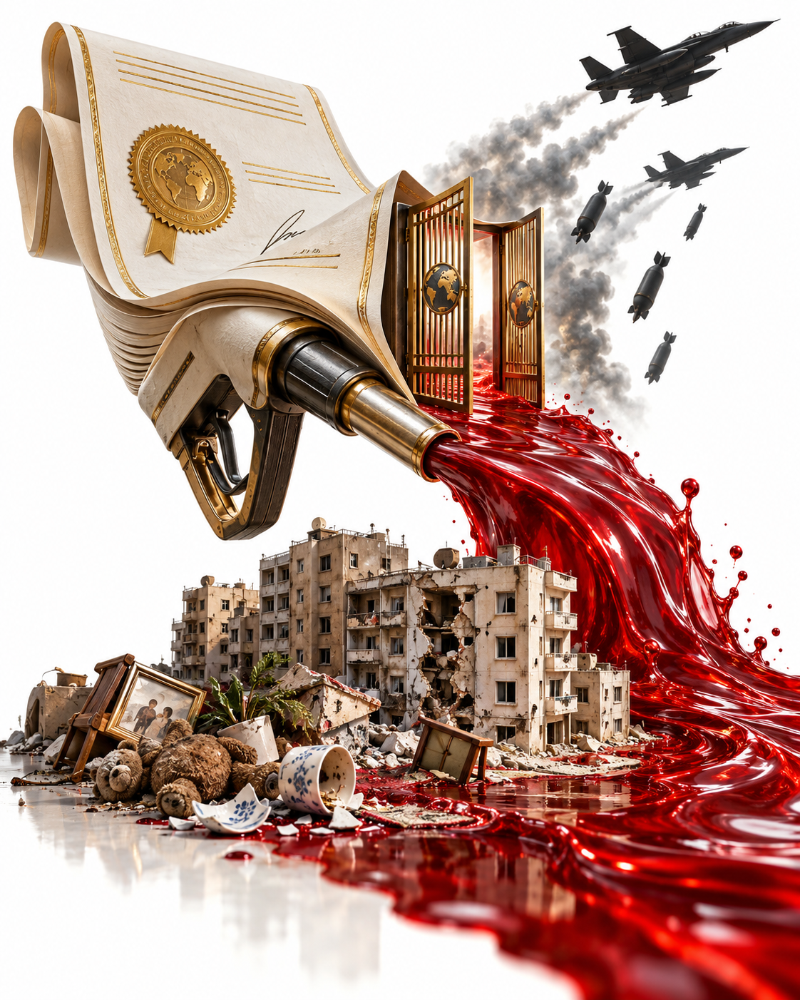
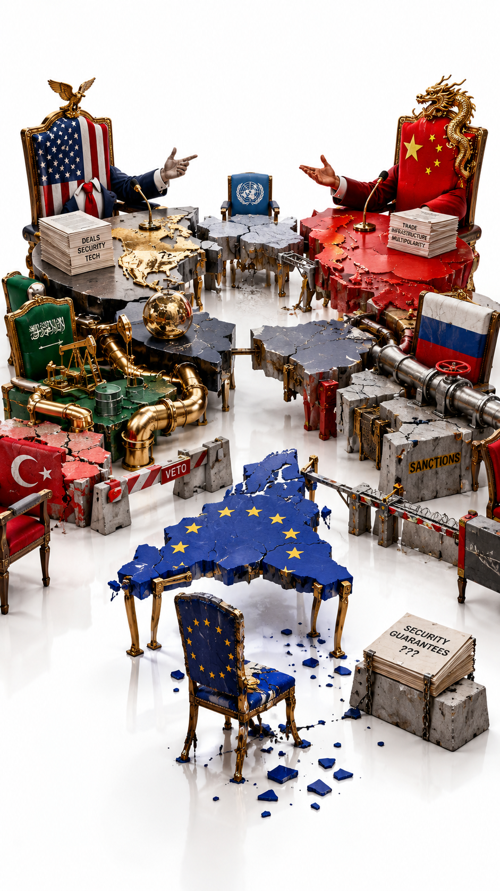

I. Two Remarks
On the ninth of October, Ukraine's foreign minister Andrii Sybiha wrote briefly and without diplomatic ornament. Easing sanctions does not bring peace closer and does not help the markets. Only an energy ceasefire can bring prices down. Ukraine is ready for one right now, and Moscow can be forced to agree if there is enough strength. Putin sees weakness in what is happening, and appeasement has never brought peace (Kyiv Post).
This remark matters not for its emotion. It contains a description of how partners treat Russia. For Washington, Russian diesel has become a market factor. For Kyiv, Russia remains a party that must accept a reciprocal obligation. One and the same deal reads as an economic measure and as a political gift.
The second remark came from Zelensky. He told journalists that the Ukrainian team was being used as a smokescreen, and called this unfair (Ukrainska Pravda). He said more to Axios. The Americans invited Kyiv to Florida to discuss negotiations, nobody mentioned diesel, and an hour before the announcement the Ukrainian negotiators learned that Trump was about to call Putin. In his words, Washington met Kyiv on one side and called Putin on the other. He immediately added that he might be wrong about the intentions (Axios, interview).
An American official describes the same hours differently. The talks in Miami were constructive, and the crisis flared up afterwards. A Ukrainian source told Axios that Witkoff and Kushner threatened to cut Kyiv off from intelligence. The official denies this (Axios, the official's account). The dispute over words cannot be verified. It does not cancel the structure.
The US Treasury issued the authorization for Russian diesel supplies that same evening (OFAC). In the morning one political reality existed. By evening a legal document had created another.
The war did not stop. Nobody announced a confirmed mutual commitment to halt strikes on energy. Putin's aide Yuri Ushakov said that Putin had made no commitment to resume negotiations (Kyiv Post).
The next morning, guided aerial bombs destroyed part of a five-storey apartment building in Zaporizhzhia. By evening the emergency service counted twenty dead, three of them children (Ukrainska Pravda).
These two events cannot be joined by a causal arrow merely because one follows the other. There is no evidence that Washington's decision caused this particular strike. Zaporizhzhia is bombed regularly, and according to Reuters, the strikes have intensified in recent months.
But there is another, more troubling relation between the events. In one space, power changed the economic conditions of the war. In the other, people went on dying from its weapons. The political explanation of the first event did nothing to diminish the reality of the second.
This is where the word smokescreen gains its force. It does not necessarily mean a secret room where a few people drew up a common plan. Sometimes a screen divides two spaces that exist at the same time, and the inhabitants of each prefer not to look at what is happening in the other.
One side speaks of the price of fuel. Another of security. A third of investment. A fourth of territorial demands.
Everyone uses the word peace.
Does it mean the same thing to all of them?
II. Two Lives of One Decision
To understand the nature of what is happening, one has to give up the habit of viewing political events only through the statements of those who announce them.
In economics a decision has one biography. In diplomacy another. In the life of the person it affects, a third.
For the American administration, Russian diesel means additional supply and less pressure on domestic prices. Congressional elections are ahead, and the price of fuel remains a political fact. For the Russian leadership, the same supplies mean export revenue and a partial easing of isolation. Zelensky called it money for the war. For Ukraine, the deal means weaker sanctions pressure.
The diesel itself stays the same. What changes is not its composition but its place within a system of interests.
If one side receives relief today while the other waits for the war to end tomorrow, a space opens between these two moments, and that space is what needs to be examined.
Who determines the order of concessions?
Who bears the risk that the reciprocal obligation will not be fulfilled?
Who can revoke the authorization if the war continues?
Who gains the ability to dispose of the result regardless of its declared purpose?
According to Axios, the American side pressed Kyiv for a unilateral halt to strikes on Russian oil refineries. Kyiv proposed reciprocity. Ukraine stops striking the refineries, Russia stops striking Ukrainian power plants. The official said Trump does not consider these strikes equivalent.
In September, according to Zelensky in an interview with Axios, the idea of a mutual halt to strikes on energy came from the Americans themselves. Two weeks later, reciprocity had disappeared from the American framework.
There is also a Russian counter-step, and it must be described honestly. Moscow is lifting the diesel export ban that it imposed itself in July after Ukrainian strikes. Deputy Prime Minister Alexander Novak said the ban would be lifted immediately. The volumes are reported differently. Trump's post speaks of three million tonnes. Kyiv Post reports three hundred thousand tonnes at once, five hundred thousand in November and a million after that. An analyst quoted by Axios considers the promise uncertain and small.
A separate piece of testimony came from Ukraine's sanctions commissioner Vladyslav Vlasiuk. If easing sanctions really lowers prices, then the main cause of the shortage was the Iran conflict, not Ukrainian strikes (RFE/RL).
The contradictory reports reveal more than a diplomatic dispute. They reveal dependence.
Ukraine is able to strike, but part of its capabilities is supplied by allies. The United States can influence the terms of assistance, but it needs the Europeans and the world fuel market. Russia has its own resources, but it needs export revenue, and Ukrainian strikes on its refineries have sharpened that need.
Each participant has freedom of action. And each runs into constraints created by others.
This is no longer a flat map of opposing states. It is a three-dimensional structure in which the action of one changes the space of possibilities for the rest.
III. The Arithmetic of Diesel
The official explanation of the deal sounds simple. Russia will supply diesel to the American and world markets, and prices will fall. To understand what lies behind the smokescreen, one must first check whether this explanation survives ordinary arithmetic.
How much was promised
According to Trump, Russia will immediately supply more than three hundred thousand tonnes of diesel, then five hundred thousand tonnes in November and a million tonnes after that. He went on to speak of three million tonnes depending on the condition of Russian refineries (Axios). The White House did not say who would pay for the fuel or when it would arrive. Nor is it known whether the November deliveries will arrive before the election on the third of November (Fortune).
A tonne of diesel holds roughly seven and a half barrels. So the first batch amounts to about 2.2 million barrels. The first three announced stages together come to about 13.5 million barrels. CNBC describes another three million tonnes as an additional conditional volume. Adding it to the first three stages gives 4.8 million tonnes, roughly 36 million barrels. That is about ten days of US consumption and twenty-two per cent of assumed quarterly exports. But it is a promise dependent on refinery conditions, not a confirmed shipment. (CNBC)
How much America itself consumes and sells
The United States consumes about 3.7 million barrels of distillate fuel a day. The figure comes from Neil Atkinson, a former official of the International Energy Agency (Al Jazeera).
A simple calculation follows. The first batch covers a little more than half of one day of American consumption. Former ambassador Steven Pifer puts it at less than half a day (Kyiv Post). All three stages together cover about three and a half days. Even three million tonnes come to roughly six days.
Now the main point. The United States is, in aggregate, a net exporter of distillates, although it also imports individual cargoes. It is the largest diesel exporter in the world (Al Jazeera). According to weekly data from the US energy agency at the start of October, the country was exporting about 1.76 million barrels of distillates a day and importing about 118 thousand (DTN). In early August exports reached a record of 1.9 million barrels a day, and most of them went to Europe (OilPrice, citing Bloomberg).
The ratio is almost absurd. The first Russian batch equals roughly a day and a quarter of American exports. All three announced stages equal roughly seven and a half days. In the last three months of the year, at the current pace, America will export about 160 million barrels. The promised Russian volume would be about eight per cent of that.
America sells diesel to the world on a scale beside which the Russian supply looks like an adjustment, not a solution.
Why prices are still high
If a country exports diesel, why is it expensive at home? Because the price of diesel is global. An American refinery sells fuel where it is paid more. When Europe, Brazil or Turkey are willing to pay more, tankers leave the Gulf of Mexico for them, and the domestic price is pulled up after the world price.
In September the average US diesel price reached a record of six dollars fifty-three cents a gallon, almost two dollars eighty cents higher than a year earlier. The main cause cited was disruption in the Strait of Hormuz amid the war with Iran (FleetOwner). US distillate stocks at the start of October stood at about 105 million barrels. That is more than sixteen million below a year earlier (DTN). The first three announced stages would not close even this year-on-year gap. The additional conditional promise changes the comparison but is not equivalent to delivered fuel.
Where Russian diesel will actually go
There is also a legal barrier. In 2022 the United States banned imports of Russian oil and petroleum products by executive order and by a separate law. Treasury General License 135 authorizes transactions in Russian diesel, including import. But it remains an open question whether a temporary license can override a ban set by a statute that provides its own procedure for repeal through Congress (Diplomacy and Law). I am not a lawyer and cite only this analysis.
So another direction is more likely. The usual buyers of Russian diesel were Brazil and Turkey. After the July ban on Russian exports, they began competing with Europeans for American cargoes (NV).
This is one plausible indirect economic mechanism of the deal. Russian diesel returns to its old buyers. They stop outbidding others for American cargoes. Pressure on the world market eases slightly, and this is indirectly reflected in the American price. The mechanism is real. But its scale is set by the same volumes we have already counted.
What the market showed
On the day of the announcement, New York diesel futures fell by about four and a half per cent, to four dollars seventy-three cents a gallon. But on the same day reports emerged that China was lifting a de facto ban on fuel exports, and the two signals cannot be separated (DTN).
Analyst Tom Kloza estimated the move at the pump at seven or eight cents a gallon. He called the announcement noise and said Russia could not quickly supply a meaningful volume, because drone strikes had damaged about half of its refining. Ed Hirs expects relief at the pump to come only after the election, and briefly. Patrick De Haan noted that the parallel decision on dyed diesel does not add a single gallon (Newsweek). Joseph Webster of the Atlantic Council considers the volumes uncertain and small (Axios).
Doubts about the supply itself are reinforced by figures on Russian refineries. According to the International Energy Agency, Russian diesel output has fallen by roughly thirty per cent (Fortune). An analysis by the Federal Reserve Bank of Dallas found that over the summer Ukrainian strikes cut available refining capacity by up to sixty per cent (Axios).
Patterns
The first pattern. The declared goal and the chosen instrument do not match in scale. A volume equal to a few days of consumption is announced as a remedy for record prices. When an instrument is this small for its goal, one must look for the other functions it performs. This does not prove deception. It shows where to look.
The second pattern. Of the two available levers, the one chosen does not touch American exporters. In September Trump and lawmakers discussed restricting exports of American diesel (Al Jazeera). According to an explainer in US News, analysts believed such a ban would hurt the world market rather than help it. But it would have touched American refineries that sell fuel abroad at record prices. The deal with Moscow shifts the costs of the decision onto the sanctions regime and onto Ukraine, not onto American refining. This is my interpretation, not an established motive.
The third pattern, and the most important. Trump tied the full volume of supplies to the condition of Russian refineries. So the better Russian refineries work, the more diesel the market receives. Ukrainian strikes on those refineries become an obstacle to an American interest. The deal turns Washington into a party interested in the integrity of Russian refining. This is not a conspiracy. It is a structure of incentives, and it explains why the request to Kyiv was unilateral.
The fourth pattern. The political calendar is shorter than the market one. Only weeks remain before the election on the third of November. The market reacts to an announcement at once, while a physical tanker takes a long time to arrive. If the main effect of the deal lies in the headline and in futures, it was achieved on the day of the announcement, regardless of how much diesel arrives later.
The fifth pattern. The explanation relocates the cause. Trump said diesel was getting more expensive because of Ukrainian strikes, not because of the war with Iran. Webster calls this shifting the blame onto Ukraine (Axios). Vlasiuk points to the contradiction. If a small Russian volume lowers prices, then the shortage is driven by the Iran crisis, not by strikes on refineries (RFE/RL).
The price of diesel has two parts
A strong thesis is heard in public commentary. Diesel is made from oil, so its price cannot be lowered without lowering the price of oil. On the day of the deal, December Brent stood at about 104 dollars 70 cents a barrel (DTN).
The thesis is half right. Crude usually makes up only about forty-two per cent of the price of diesel. The rest is the refining margin, taxes and distribution. On the twenty-second of September US diesel set a record on the very day Brent fell below 97 dollars, its lowest since the eighth of September (BizPac Review). So it is not only about oil. The premium of European diesel over Brent reached a record of about 95 dollars a barrel. Around ten per cent of the world's refining capacity has been knocked out by strikes in the Middle East and in Russia.
It is more accurate to put it this way. The price of diesel has two parts, the crude part and the refinery part. Additional Russian tonnes could ease some pressure on the refining market. The crude component depends, among other things, on the Strait of Hormuz. These markets are connected, so there is no strict boundary between the two components. And this is where the next layer appears.
The Iranian channel
The day after the call, Kremlin spokesman Dmitry Peskov said that Putin had conveyed to Trump Tehran's vision of a possible end to the war with Iran. He did so in agreement with Iran's president Masoud Pezeshkian (CNBC).
Some commentators build a strong version on this fact. The diesel story masks Washington's real task. Trump hopes that Putin will help unblock the Strait of Hormuz and bring down the price of oil before the election. In this logic, the diesel deal becomes payment for mediation.
The version has support. On the twenty-sixth of September Pezeshkian said that Iran no longer trusts negotiations with Washington. Conditions in the strait remain unstable. CNBC’s report of the tenth of October describes tanker attacks alongside an export recovery under military escort, so it cannot be treated as completely closed on that date. (CNBC) Tehran proposed a seven-day plan in which the strait reopens on the sixth day in exchange for lifting the American naval blockade and oil sanctions and unfreezing about twelve billion dollars (Al Jazeera). Washington needs a channel that Tehran trusts.
There is also a weakening detail. In the same article Pezeshkian says that Iran's messages to Washington are relayed by Qatar and Pakistan. The claim that these mediators have dropped out of the game entirely is not confirmed by the sources. Russia becomes one more channel, but not the only one.
Here Moscow's peculiar position becomes visible. It is simultaneously waging war against Ukraine, earning from oil made expensive by the Iran war, and offering itself as a mediator in settling that very war. The service of a mediator becomes a commodity. The diesel license may be part of the price of that service. There is no evidence of a direct link, this is a hypothesis.
Does Russia have this diesel
The July ban was not total. It did not cover trade within the Eurasian Economic Union or intergovernmental agreements. According to traders cited by Reuters, in August Russia supplied Kazakhstan, Kyrgyzstan, Mongolia and Tajikistan with more than 370 thousand tonnes of diesel, twice as much as in July. Over eight months, about 2.5 million tonnes went to Central Asia and Afghanistan (EADaily).
Something important follows. The first promised batch of three hundred thousand tonnes is comparable in scale to a month of deliveries to allies. Comparable volumes do not establish the size of a free surplus, since previously allocated supplies differ from new export capacity. Three million tonnes remain a promise that Trump himself made dependent on the condition of Russian refineries. A figure of 340 thousand tonnes delivered to Central Asia in September circulates in public commentary. I was unable to find it in the sources, but its order of magnitude matches the August data.
The American scale confirms this indirectly. The United States exports roughly six to seven million tonnes of distillates a month, that is seventy to eighty million a year. This is my conversion of weekly data of 1.5 to 1.76 million barrels a day. In this row of figures, the Russian surplus looks like a drop.
The word as a market instrument
There is one more thought worth making part of this investigation. In the politics of populists a promise sometimes works more powerfully than its fulfilment. Trump's statement about falling prices works as an incantation addressed to the market. Futures fell on the day of the announcement, weeks before tankers could deliver anything.
This device has a mirror Ukrainian example. On the first of September Zelensky warned airlines and insurers that Russian airspace was effectively closing (Euronews). On the ninth of October, the day of the diesel deal, all four Moscow airports restricted flights because of a drone attack. At Vnukovo more than forty per cent of flights were delayed. Over the first nine months of the year, flight cancellations in Russia doubled (Moscow Times).
Two presidents use one and the same instrument, expectation. One tries to lower the price before the fuel arrives. The other made the insurance market recalculate its risks before the sky closed completely. The difference is that the Ukrainian word is followed by drones, while the American word is followed, so far, only by the promise of someone else's fuel.
The law and the loophole
There is no worldwide law prohibiting the purchase of Russian fuel. There is a regime assembled in layers. Each layer was adopted by a single country or union, and each can be removed separately.
The first layer is American. In March 2022, Executive Order 14066 restricted imports of Russian energy. On the eighth of April 2022 Congress passed a separate law ending imports of Russian oil. It bans the import into the United States of all Russian goods in chapter 27 of the tariff schedule, that is oil, gas and petroleum products, including diesel (text of the law).
The most important part of this law is its conditions for repeal. The president may lift the ban only by certifying three things to Congress. Russia has agreed to withdraw its forces and end hostilities, and the government of Ukraine has accepted this. Russia poses no immediate threat of aggression to NATO members. Russia recognizes the right of Ukrainians to choose their own government. Before that come forty-five days of consultations with congressional committees, and after it ninety days during which Congress may block the move.
None of the three conditions is met today. The law ties the return of Russian fuel to the American market precisely to what is absent now, an end to the war accepted by Ukraine. The temporary Treasury license permits the import of diesel but does not repeal the law. Whether it can override a ban set by Congress remains an open legal question (Diplomacy and Law). I am not a lawyer. But the gap between the letter of the law and the action of the executive is visible without legal training.
The second layer is European. Since the fifth of February 2023 the European Union has banned imports of Russian petroleum products, including diesel. European ships, insurers and financiers may not service such cargoes if the price is above the set cap (gCaptain).
The third layer is collective. The G7 countries, the European Union and Australia introduced a price cap. For diesel it was set in 2023 at one hundred dollars a barrel (Energy Intelligence). This is not a ban on purchase for the whole world. It is a ban on Western companies shipping, insuring and financing Russian fuel above the cap. I have not checked the current level of the diesel cap.
The fourth layer is the newest. The Lindsey Graham law of the eighteenth of September 2026 provides for tariffs of up to one hundred per cent on the five largest buyers of Russian oil and gas (Fortune). It also allows the president to suspend sanctions if he certifies to Congress that this serves the national interest and explains his reasons (Oil and Gas Journal).
A direct import ban in the US or EU does not automatically become a purchasing ban for India, China, Turkey or Brazil. But access to Western services and secondary sanctions or tariffs create constraints of their own.
License 135 authorizes specified diesel transactions under the American sanctions regulations it names, rather than repealing the entire American layer of restrictions. The European one remains, so Russian fuel cannot lawfully reach Europe, where the diesel shortage is most acute. Another pattern is visible here. The collective regime was assembled over years, and one participant introduced a broad exception within its layer in a single evening without consulting the others. The asymmetry repeats itself, now within the Western camp.
It is not known whether the administration has sent Congress a certification under the Graham law. If it has, the certification must contain an explanation, and the real motivation for the deal may be found precisely there. This document is worth looking for.
Is the price explanation invented
A categorical answer is impossible. There are arguments that prices serve as cover. The volumes are negligible compared with American exports. The United States is itself the main seller of diesel. Import into the country is legally contested. The deal coincided with the talks in Miami and came two days after Putin's birthday. The full volume is tied to Russian refineries. Russian tonnes do not directly determine the crude part of the price, while the Iranian channel does.
There are also arguments against. Diesel prices really are at record levels, and this is real pain for farmers and hauliers before the election. Trump has spoken consistently about diesel since September. Futures really did fall. The indirect mechanism, through the return of Russian fuel to its old buyers, does exist.
The most cautious conclusion is this. The price motive is real, but it is not enough to explain the deal as a whole. The gap between the scale of the goal and the scale of the instrument is the very space where the smokescreen begins.

IV. The People Through Whom Capital Flows
The next layer appears where state diplomacy meets private investment. Particular rigour is needed here, so this section keeps only what could be verified.
Kirill Dmitriev heads the Russian Direct Investment Fund. According to Reuters, he has long pushed to resume Russian gas sales to Germany and has become one of Moscow's main channels to Washington. Last month he met representatives of the US Departments of Energy and the Treasury to discuss energy projects (Kyiv Post, citing Reuters).
Before his diplomatic work, Jared Kushner founded the fund Affinity Partners. According to a New York Times report summarized by Bisnow, the Saudi sovereign wealth fund invested two billion dollars in it. This is a fact about the past. It proves nothing about the current negotiations.
On the eighth of October Reuters reported, citing five sources, that Kushner and Dmitriev had discussed bringing an American investor into the Nord Stream pipelines. The investor would profit from gas flowing to Europe once the war ends. The sources are unsure how much of the recent meetings this question took up, and two say it remains on the agenda. The White House replied that any deal would have to be negotiated between Russia and American financial agencies and benefit American taxpayers, and that there had been no recent discussions of Nord Stream. An American official called the deal unlikely in the medium term (Moscow Times).
The same report describes conversations between Kushner and Dmitriev about selling Lukoil's European and other assets. The buyer could be a consortium including the US International Development Finance Corporation and investors from Qatar and the UAE, with American authorities lifting sanctions. Steve Witkoff is also involved in the Lukoil talks.
We have no evidence of an unlawful arrangement or of a personal interest in prolonging the war. But these circumstances help explain why political decisions and economic opportunities increasingly turn up side by side.
Before us are people able to speak two languages. The language of state policy, which speaks of ending the war, of security and of agreements. And the language of capital, which speaks of property, licenses, market access and returns.
These languages do not necessarily contradict each other. Economic interdependence sometimes really does support stability.
But a question arises here that runs deeper than the usual suspicion of corruption.
What happens when the right to make a political decision itself becomes the condition for economic value to arise?
A pipeline can exist physically and remain commercially useless because of sanctions. A refinery can keep its capacity, yet its output cannot be sold freely. An investment project can be promising and still depend on a government's permission. Reuters notes plainly that a Nord Stream deal is today effectively prohibited by sanctions, although Trump could lift them.
Then the most important resource becomes not only property but access to the institution capable of changing its legal regime.
The diplomatic intermediary finds himself in a special position. He may not own the asset or sign the commercial contract. But his participation in the political process shapes the conditions under which others will be able to own, buy, sell or invest.
This is how a system arises that I provisionally call negotiated financialization. It is the transformation of a political settlement into a space where new economic rights are formed alongside questions of security.
And yet a boundary must be held. The coincidence of commercial gain and political decision does not prove that the decision was made for the sake of the gain. Understanding requires not only coincidences but demonstrable mechanisms.
One verified detail works against the strongest version of this hypothesis. According to Reuters, the investor's profit from Nord Stream is tied to the end of the war rather than preceding it. The diesel deal is built the other way round. The relief came before any commitments. This difference is worth remembering.
V. A Europe That No Longer Fits at the Table
If one steps back further, the picture turns out to be older than the current negotiators. The next paragraph is history, not investigation, and it remains the author's interpretation.
For decades Europe built a system in which American security guarantees coexisted with Russian energy resources, German industry and the growing role of China. It cannot be reduced to a single agreement. It grew out of many decisions, each of which seemed rational on its own.
The system looked stable because everyone needed everyone else. But economic interdependence grew faster than the ability to agree on the principles of common security. The annexation of Crimea in 2014 already showed the danger. The invasion of 2022 destroyed the notion that mutual commercial interest would by itself restrain the Russian leadership from using force.
From that moment Europe has been rebuilding its system of dependencies, and doing so in law.
In January 2026 the twenty-seven member states of the European Union adopted a regulation phasing out Russian gas. A full ban on Russian liquefied gas takes effect at the start of 2027, and on pipeline gas in the autumn of 2027 (Council of the EU). This is not a declaration that can be ignored at a meeting of two presidents. It is a legal structure in force.
So a possible American-Russian arrangement on Nord Stream would run up against more than economics. According to the Moscow Times, the pipelines are under US and EU sanctions, and the German government does not want them reopened. Bundestag member Michael Kellner called such a deal potentially dirty. Poland, according to one source, is watching closely and is firmly opposed.
On the sixth of January 2026 Zelensky, Macron and Starmer signed the Paris Declaration on security guarantees. It provides for support to Ukraine in the event of a new attack and for a multinational force after hostilities end. The United States is to lead a system of continuous ceasefire verification (Euromaidan Press). But no date for the declaration's entry into force has been named, and its effect depends on a ceasefire that Russia has so far refused to accept.
Here it becomes clear that a new architecture cannot be built without a struggle with the old one. Some forces try to restore economic channels. Others want to rule out a return to the former dependence. Still others consider military guarantees for Ukraine the main condition for peace.
All these processes run at the same time. Their collision is what determines the direction of movement.
Europe is not a passive space for other people's arrangements. It has its own legislation, sanctions, financial institutions and political will.

VI. The State Inside the Screen
When speaking of external interests around Ukraine, one cannot leave the Ukrainian political system itself invisible.
Zelensky does not exist apart from the state he leads. Behind his decisions stand parliament, the government, the military command, the security services, regional elites, state enterprises, entrepreneurs, volunteers and civil society.
The war changed the relations among them. It demanded a concentration of powers, emergency procurement and fast decisions. Where large sums can be distributed quickly, the possibility of abuse also arises.
On the eleventh of November 2025 the National Anti-Corruption Bureau announced Operation Midas around the state nuclear company Energoatom. Five people were detained and seven were served notices of suspicion. According to investigators, suppliers were pressured to pay kickbacks of ten to fifteen per cent of contract values, and about one hundred million dollars was laundered through an office in Kyiv. The alleged organizer named was businessman Tymur Mindich, who reportedly left the country before the searches (Ukrainska Pravda). These were investigators' allegations as reported in November 2025, not verdicts. I have not verified the current state of the court proceedings.
Ukrainian reality cannot be reduced either to the image of a single heroic people or to a corrupt system behind which supposedly nothing else exists. It contains both forces. On one side, patronage networks, the struggle for resources, centralization, the interests of old and new elites. On the other, independent investigators, soldiers, volunteers, entrepreneurs and institutions such as the anti-corruption bureau, capable of acting against their own government.
And here lies another form of future contradiction. War creates new public authorities. People who gained influence through defence, technology or relief work may, after the war, claim a change in the political order. Old institutions do not disappear just because a new public energy has appeared.
The outside world has an interest here too, and it is set down in a document. The US-Ukraine Reconstruction Investment Fund was created under an intergovernmental agreement. Its starting capital is one hundred and fifty million dollars, contributed equally by the US International Development Finance Corporation and by Ukraine. Management is split equally. The fund is meant to invest in critical minerals, energy, transport and logistics, and under the agreement its mineral, oil and gas projects are limited to the territory of Ukraine (DFC).
It follows that a peace agreement will not automatically conclude Ukraine's internal history. It may open the next phase of a struggle over reforms, property, representation, reconstruction and the distribution of responsibility for the years of war.
Ukraine cannot be regarded merely as an object of negotiations between great powers. It is itself a complex field of active interests.
VII. China and the Invisible Economy of War
If one rises higher still, the European conflict takes on a global dimension. This section rests on fewer verified data, and I say so plainly.
After 2022 Russia greatly increased its dependence on alternative markets. Already in the International Energy Agency's assessment for May 2022, Chinese purchases of Russian oil and fuel exceeded two million barrels a day for the first time, and India rose to second place among recipients, replacing Germany (summary of the report on Oil and Gas 360). Figures four years old need updating, but this source confirms the direction of the shift.
The same publication notes that China and India export petroleum products themselves and do not need Russian fuel the way the European market did. Buying crude and buying fuel belong to different interests.
So China does not need an endless war as its only source of gain. Beijing needs energy, markets and room for strategic manoeuvre. India seeks to buy the resources it needs and to keep its own position. These statements are interpretation, not established fact, and I do not cite them as data.
A fresh verified trace of another kind is also visible. Investors from Qatar and the UAE take part in the scheme for a possible sale of Lukoil's assets (Moscow Times). The Gulf states possess capital that can take part in the most diverse projects and is not obliged to reflect a single ideology.
Here a central property of the contemporary system becomes visible. States can be in political confrontation and remain economically connected through third countries, banks, funds and trade routes. The political border turns out to be more definite than the economic one.
Once again the question to ask is not who secretly directs everyone. The question is which relations continue to operate regardless of the official language of confrontation.
VIII. The Machine of History
Now let us try to do what this whole investigation was undertaken for. Let us step away from individual names. Let us set aside for a moment Trump, Putin, Zelensky, Witkoff, Kushner, Dmitriev, European leaders and investors.
Not because their actions are insignificant. State decisions have real consequences, and responsibility for them does not dissolve into the system.
But let us look at what emerges from the sum of these decisions. This is a chain of links. Some links are confirmed, some remain my hypothesis, and I keep them apart.
War destroys former economic relations. The rupture creates new trade routes. New routes strengthen the dependence of some states on others. Dependence turns into a negotiating resource. These links are confirmed in general terms.
Sanctions change access to property. The right to lift sanctions acquires economic value. This link is confirmed by examples. Nord Stream is effectively prohibited by sanctions, and Trump could lift them. Diesel received a temporary general license running into April 2027. The sale of Lukoil's assets presupposes the lifting of sanctions.
Military needs create state orders. The reconstruction of a country opens investment opportunities. International financing sustains Ukraine's existence and at the same time creates obligations. The reconstruction fund exists as an intergovernmental agreement. I have not verified what it has invested since its launch.
The continuation of the war strengthens some processes and destroys others. Participants adapt and begin to defend the opportunities that the new reality gives them. This is already a conclusion, not a fact. It needs to be tested.
What emerges here is not a single line drawn by someone's hand but many lines that intersect and gradually form a pattern. Under certain conditions the pattern can reproduce itself. The longer the war, the more institutions are forced to organize their work around its existence.
It does not follow that all of them want it to continue. For some, adaptation is necessary to protect people. For others, it means costs. For still others, a chance to win contracts or influence.
So the historical direction cannot be derived simply from a list of beneficiaries. One must distinguish those who created the conditions, those who decide whether to preserve them, those who adapted, and those who gain advantages regardless of original intentions.
Here causality is more complex than moral accusation. High fuel prices put pressure on the American leadership but do not compel it to turn to Russian supplies. The military threat makes Europeans rearm but does not determine every purchase. Russia's dependence on China affects the freedom of Moscow's diplomacy but does not make Moscow governable from Beijing.
The continuation of the war is driven by many factors. But this does not cancel the specific decisions of the Russian leadership on the invasion, on territorial demands and on continuing hostilities. A multiplicity of causes does not mean an equality of responsibility.
This matters especially, because there is a dangerous trick. War can be presented as so complex a historical process that it becomes impossible to establish who decided what. In this way complexity turns into absolution.
Our investigation must not commit this substitution.
IX. What May Lie Behind the Smokescreen
Now we can return to the original question. What lies behind Zelensky's smokescreen?
Not quite what a first reading of his words suggests. Behind it there need not be a single room, a single circle of people or a document in which Ukraine's future is already written.
So as not to replace the investigation with a guess, I apply the method of deduction openly. First the premises that are confirmed. Then the hypotheses they allow. Then the conditions under which each hypothesis would have to be rejected. A hypothesis that cannot be refuted explains nothing.
Premises
- Washington asked Kyiv to halt strikes on Russian refineries unilaterally, while Kyiv proposed reciprocity (Axios).
- In September, according to Zelensky, reciprocity was proposed by the Americans themselves (Axios).
- On the ninth of October Trump announced the deal with Putin, and the Treasury issued a temporary general license running into April 2027. The primary OFAC document specifies 7 April 2027 (OFAC).
- On the same day Kyiv was negotiating in Miami, and according to Zelensky nobody told it about the deal in advance (Axios, interview).
- Putin made no commitment to resume negotiations (Kyiv Post).
- Kushner and Dmitriev, according to Reuters, discussed Nord Stream and Lukoil, and the investor's profit from the pipelines is tied to the end of the war (Moscow Times).
Hypothesis one. The price logic
Washington acted for the sake of fuel prices ahead of the election. Supporting it are Trump's public position and the American official's words that strikes on refineries hurt Americans too. Contradicting it are the uncertain and small volumes, Vlasiuk's point that the Iran conflict is the main cause of the shortage, and the fact that the Americans themselves first proposed reciprocity.
How to test it. Linking the next relief to a verifiable energy ceasefire would not in itself refute the price motive, because such a truce could serve lower prices and diplomacy at the same time. That step would test the diplomatic explanation, namely whether economic incentives are being used to obtain verifiable commitments. The price explanation as the sole motive would be weakened if further concessions to Moscow continued once prices no longer required them, or after the election, without any new price rationale.
The arithmetic of section III weakens this hypothesis as the only explanation. The first three announced stages cover about three and a half days of American consumption and about eight per cent of American exports for a quarter. The United States itself remains the largest exporter of diesel, and the import of Russian fuel into the country is legally contested. The price motive remains real, but it explains the deal only in part.
Hypothesis two. A lever to secure a meeting
The relief bought a visit. This is Zelensky's own supposition, and he cautioned that he might be wrong. Supporting it is the fact that Witkoff and Kushner, according to Axios, are considering a trip to Moscow and Kyiv next week, and that Ushakov said Trump had instructed that the Kremlin's signals be passed on to the Ukrainians. Contradicting it is the fact that Putin promised nothing. It would be weakened by the absence of a trip, or by a trip without a reciprocal step from Moscow.
Hypothesis three. Negotiated financialization
Political decisions and commercial channels draw closer, and the former begin to serve the latter. Supporting it is the very set of channels, Dmitriev, Kushner, Lukoil, Nord Stream, the US International Development Finance Corporation. Contradicting it are the facts that, according to Reuters, an investor's Nord Stream profit would come only once the war ends, that the White House denies recent discussions, that an American official considers the deal unlikely, and that Germany and European law stand against it. It would be weakened by the following sequence. Any decision on Nord Stream or Lukoil comes only after the war has ended. It would be strengthened by the reverse sequence, relief granted while the war goes on, as with diesel.
Hypothesis four. Structural drift
This is the central hypothesis of my entire investigation. The emerging order is determined not by everyone striving for one goal but by each participant's ability to turn part of the ongoing crisis into a political or economic resource of its own.
It is not a proven conclusion. It is a structural hypothesis. To keep it from becoming irrefutable, it must be tied to indicators. It should be revised if future economic concessions consistently come to depend on a verifiable halt to attacks. It will gain further grounds if agreements multiply while the war continues at the same intensity.
Hypothesis five. The Iranian channel
The diesel license became part of a payment for Russian mediation with Iran. Supporting it is the fact that after the call the Kremlin reported passing Iran's vision of an end to the war to Trump, in agreement with Pezeshkian. Supporting it too is the fact that the crude part of the diesel price depends on the Strait of Hormuz, not on Russian tonnes. Contradicting it is the fact that Iran still has other mediators, Qatar and Pakistan, and that nobody has confirmed a direct link between the license and the Iranian message. It will be strengthened by any step toward unblocking the strait that mentions Moscow's role in the coming weeks. It will be weakened if the strait reopens through a Qatari or Pakistani channel without Russian participation.
This hypothesis does not cancel the others. A single deal can at once lower the price in the headlines, buy a visit to Moscow and pay for the Iranian channel. But in all five versions one thing stays the same. The concession to Russia was made before anything verifiable was received in return, and its cost falls on Ukraine and on the sanctions regime.
What follows
Two of the five hypotheses, the price logic and negotiated financialization, today withstand testing only in part. The hypothesis of a lever awaits the events of next week. The fourth depends on what happens to the license, to Nord Stream and to Lukoil. The fifth depends on the Strait of Hormuz and on whose channel works.
What matters is not the beauty of the construction but its ability to withstand events we do not yet know.
X. The Shattered Common World
There is a layer that cannot be fitted into a financial model.
Before this war many people lived in a space where language, literature, memories, family ties, cities and personal histories formed a cultural community. It was never politically uniform. A Latvian, a Ukrainian, a Russian, a Belarusian could belong to different historical traditions and imagine the state, memory and the future in different ways.
And yet common corridors of culture ran between people. The same book could lie on a table in Riga, Kyiv, Minsk, Moscow and Dublin. The same voices came from the radio. The same childhood memories were bound up with the Soviet era, though the adult judgement of that era could differ completely.
The war destroyed more than the roads between cities. It destroyed trust in the very language in which people could, until recently, speak about peace.
Here it is necessary to distinguish Russian culture from the political concept of the Russian world, which the Russian state used to justify its claims. Culture does not belong to the state the way an army does. It lives in people, in books, in works of art, in a memory that cannot be fully nationalized.
But power is capable of binding cultural symbols to violence so tightly that people begin to reject even what was once part of their own lives.
This is one of the heaviest losses. Not only destroyed buildings and interrupted biographies, but the disintegration of a common space in which a person once recognized another as one of their own.
Was this destruction anyone's single, predetermined goal? We have no grounds to claim this of the international system as a whole. But we can establish the decisions and actions that produced it, and the responsibility for them.
Here the historical structure becomes human again. Behind every geopolitical word stand people who took no part in the negotiations, created no investment funds, voted for no sanctions exemptions and set no military strategies.
Yet it is their lives that become the material on which history leaves its deepest marks.
XI. After the Curtain
I return to Zelensky's words. Now they seem to me not a simple accusation against American partners. They open the question of how far the visible architecture of international negotiations corresponds to the real distribution of political and economic power.
Peace may be discussed in one place. Economic concessions made in another. Security guarantees drafted by third states. Financial obligations arise in international institutions. And military action continues regardless of the speed of all these processes.
And then it turns out that the main property of the screen is not only its capacity to conceal. It also divides responsibility.
Every participant can say that it deals only with its own part of the common cause. One lowers prices. Another secures investment. A third discusses security. A fourth carries out an order. A fifth claims that it merely provides a service the state needs.
As a result, the system is capable of producing consequences for which no one wants to answer in full.
But responsibility does not disappear. It becomes the subject of the most necessary investigation. Who had the authority to make the decision. Who could have acted otherwise. Which consequences were foreseeable and which actually followed.
Perhaps behind the screen we will find not a secret control centre of history but a more complex and less comforting reality. A world in which economic interests can exist apart from the original moral and political aims, and in which a vast number of independent decisions gradually create an order that no one had to conceive as a whole.
But it does not follow that history is doomed to move in one direction. Every dependence has a limit. Every agreement can be revised. Every political construction meets the resistance of people, institutions and circumstances. A deterministic view must not turn into a belief in inevitability. It should help us see which conditions make an outcome possible and what must change for another possibility to appear.
I no longer think of the screen as an object to be overturned at once. Rather as a surface on which, for a long time, only shadows were seen.
As one comes closer, the shadows become figures. Behind the figures, relations are revealed. Behind the relations, historical conditions. Behind the conditions, human decisions, some conscious, others dictated by fear, gain, necessity or a mistaken idea of the future.
And if one steps back far enough, something becomes visible that cannot be made out up close. Not one hidden design, but the interaction of many forces through which political reality takes its shape.
Yet what matters most is not behind the screen. It remains in front of it.
The destroyed homes. The people who are no longer here. Twenty dead in Zaporizhzhia, three of them children. Families that have stopped understanding one another. A common cultural world broken into mutual accusations. And generations who will have to live among the consequences of decisions made by others.
One can find out who owns a pipeline. One can establish who received a sanctions authorization. One can trace the capital, the negotiators, the state funds, the intermediaries and the right of veto. One can build a model explaining why, under certain circumstances, the system keeps reproducing war.
But a question will remain that has no financial equivalent.
What must peace be like, so that its arrival means not only a new agreement on the distribution of interests but a real end to the destruction of human life?
Perhaps this is the question that should remain visible when all the other screens are finally drawn aside.
Because the most frightening thing begins not when hidden interests are discovered behind political words. It begins when those interests become so habitual a part of the world order that the very need to ask what it is all for disappears.
And then the smokescreen is no longer needed by anyone.
Everyone has already learned to look through it and notice nothing.
Sources
Data as of 10 October 2026. Casualty figures and delivery volumes are still changing.
Reference bibliography
- Axios, Barak Ravid, 10 October 2026, a US official on the reasons for the deal, the Miami talks and Putin's position
- Axios, 9 October 2026, interview with Zelensky
- Ukrainska Pravda, 10 October 2026, Zelensky on the Ukrainian team being used as a smokescreen
- Kyiv Post, 10 October 2026, Ushakov on the call, diesel volumes, the Treasury general license
- Kyiv Post, 10 October 2026, Sybiha on an energy ceasefire and the weakness of concessions
- Kyiv Post, citing Reuters, 8 October 2026, Kushner and Dmitriev on an American investor in Nord Stream
- Moscow Times, 8 October 2026, updated 10 October, Nord Stream, Lukoil, the positions of Germany and the White House
- Bisnow, 11 April 2022, two billion dollars from the Saudi fund in Affinity Partners
- Council of the EU, January 2026, the EU regulation banning Russian gas
- Euromaidan Press, 6 January 2026, the Paris Declaration on security guarantees
- Ukrainska Pravda, 11 November 2025, Operation Midas around Energoatom
- Description of the US-Ukraine Reconstruction Investment Fund
- Oil and Gas 360, summary of the International Energy Agency report for May 2022
Reference bibliography
- Reuters via US News, 10 October 2026, the strike on Zaporizhzhia
- Ukrainska Pravda, 10 October 2026, twenty dead in Zaporizhzhia
- Ukrainska Pravda, 10 October 2026, Zelensky on the meeting being used for a deal behind Ukraine's back
- Ukrainska Pravda, 10 October 2026, the Miami talks ended earlier than planned
- Ukrainska Pravda, 10 October 2026, the Kremlin on Putin rejecting negotiations
- RFE/RL, 9 October 2026, Ukraine's reaction and Vlasiuk's remarks
- CNBC, 10 October 2026, diesel volumes and the Treasury license
- Jones Day, February 2026, the EU on banning Russian gas and preparing an oil ban
Background
- Axios, 24 September 2026, Zelensky on the energy ceasefire proposal
- Reform, 21 September 2026, summary of Axios on Trump's requests to stop strikes on refineries
- Reuters via Tribune, 1 October 2026, the strike on Ukraine's power grid
- Ukrainska Pravda via Yahoo, March 2025, the energy ceasefire and strikes the following day
Further reading
- bne IntelliNews, Kushner and Dmitriev on an American investor in Nord Stream
- Yahoo Finance, the US allowed talks on Lukoil's assets
- Kyiv Post, the Lindsey Graham law on sanctions against Russia and Iran, signed on 18 September 2026
For section III. The Arithmetic of Diesel
- Axios, 9 October 2026, terms of the deal and Joseph Webster's assessment
- DTN, 9 October 2026, the fall in futures, US stocks, exports and imports
- Al Jazeera, 10 October 2026, why the US turned to Russian diesel
- Newsweek, 9 October 2026, analysts Kloza, Hirs and De Haan
- Fortune, 9 October 2026, the sanctions law and the diesel deal
- Kyiv Post, 10 October 2026, Republicans and Democrats on the deal, Steven Pifer's assessment
- Diplomacy and Law, legal analysis of License 135 and the 2022 law
- FleetOwner, 22 September 2026, record US diesel price
- OilPrice, 6 August 2026, record US diesel exports
- NV, the Russian export ban and the old buyers of Russian diesel
- BizPac Review, 23 September 2026, record diesel amid falling oil
- Al Jazeera, 26 September 2026, Pezeshkian on talks with the US and the Strait of Hormuz
- EADaily, citing Reuters, 21 September 2026, Russian diesel for Central Asia
- Euronews, 1 September 2026, Zelensky on the closing of Russian skies
- Moscow Times, 9 October 2026, restrictions at all Moscow airports
- Oil and Gas Journal, the president's powers under the Graham law
- CNBC, 10 October 2026, Peskov on passing Iran's message to Trump
- US News, 22 September 2026, why a ban on US diesel exports would hurt the market
For the subsection on the law
- Text of the Ending Importation of Russian Oil Act, Public Law 117-109 of 8 April 2022
- gCaptain, the European embargo and the price cap on Russian petroleum products
- Energy Intelligence, 2023, price caps of 100 and 45 dollars
- OFAC General License 135, 9 October 2026
- Public Law 119-111, 18 September 2026